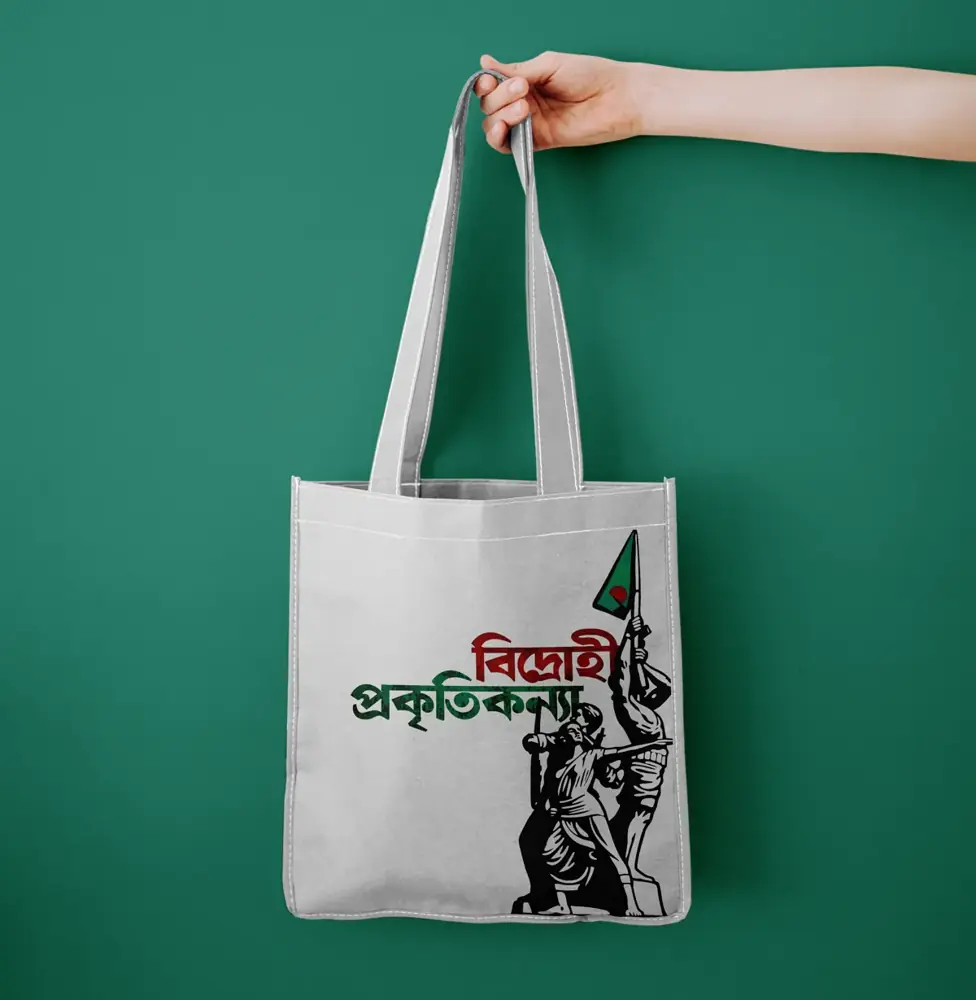
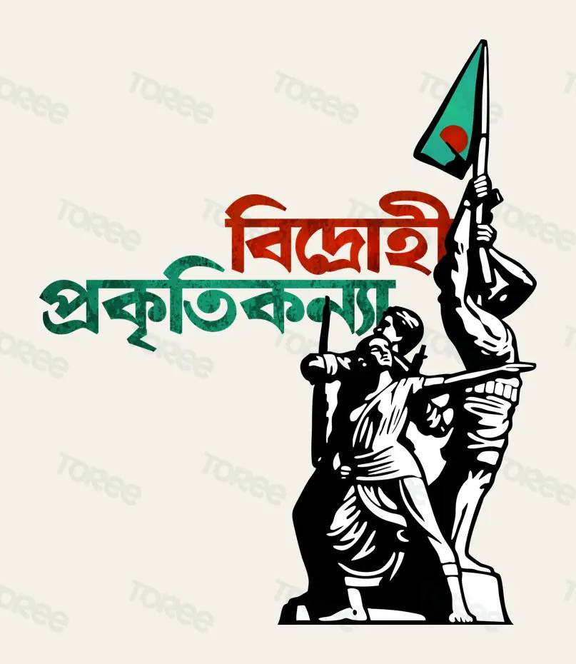

Chapter IThe Daughter of Nature
On the western bank of the old Brahmaputra, a few kilometres south of Mymensingh town, lies one of the greenest places in Bangladesh: twelve hundred acres of fields, orchards, lakes and long avenues of trees. This is Bangladesh Agricultural University, founded in 1961 to teach a nation of farmers how to feed itself.
Its students gave it a gentler name. They call it প্রকৃতিকন্যা, the daughter of nature. In English you may see it written Prokritikonna or Prakritikanya; in Bangladesh it is said pro-kri-ti-kon-na, the last syllable falling soft, the way you would speak to a child.
On the bag, প্রকৃতিকন্যা is printed in green: the green of the paddy, the green of the campus, the green of the flag.
Chapter IIMarch 1971
In March 1971 the daughter of nature put down her tools.
As Bangladesh moved toward war, the university’s vice-chancellor raised the flag of an independent Bangladesh on campus, declared the university closed and told everyone who studied and worked there to join the war.
Students who had come to learn about soil and seed went to fight for it. Teachers and staff went with them. Some of them never came back to the fields they had tended.
The war came to the campus too. The Pakistani army made its 93rd Brigade headquarters in the university rest house, and from inside the daughter of nature, orders were given that cost lives across greater Mymensingh. The same green avenues that had held lectures and harvests held fear.
On 10 December 1971, Mymensingh was free. Six days later, so was Bangladesh.

Chapter IIIBidrohi
বিদ্রোহী means rebel. It is said bid-roh-hee, and in Bangladesh it is never quite an ordinary word; it still carries the voice of our national poet, who spent a few of his boyhood years not far from here.
Put the two words together and they should not fit. A daughter of nature is quiet, patient, rooted. A rebel is none of those things. And yet that is exactly who this campus was in 1971: a place built to grow food that sent its people to grow a country instead. Nobody had to invent the contradiction. The university lived it.
On the bag, বিদ্রোহী is printed in red, above the green, the way the red sun sits above the field on our flag. The rebel rises out of the daughter of nature, not against her.
Chapter IVBijoy ’71
Thirty years later, the university raised a monument to that year.
বিজয় ’৭১, Bijoy ’71, Victory ’71, was built between 1998 and 2000 by the sculptor Shyamol Chowdhury and stands in front of the Shilpacharya Zainul Abedin Auditorium. On a six-foot pedestal, three people of Bangladesh stand together. At the centre a farmer, a muktijoddha, lifts the flag of Bangladesh toward the sky. Beside him a woman, rifle in hand, calls the nation to war. On his other side a student holds a rifle in his left hand, his body drawn back to throw a grenade.
A farmer, a woman and a student: the sculpture says what the war truly was. It was a people’s war. Everyone who could stand, stood.
The monument became one of the best known on any campus in Bangladesh. For years, children across the country met it in the pages of their Class Seven art and culture textbook, long before many of them ever saw Mymensingh. And its pedestal never stopped being used. It is a stage for gatherings, for celebrations, for protests, for every generation of students who has needed a place to stand and speak.

Chapter VOn the Canvas
On the bag, the three figures are printed in black and white, hard-edged and stark, like a photograph from 1971 that has been held and handled for fifty years.
Only one thing on them carries colour: the flag. Green, with its red sun, at the very top of the design, higher than anything else on the canvas, its tip reaching for the edge as if the bag could not hold it.
Then look at the words. They have taken the flag’s colours for themselves, red for বিদ্রোহী and green for প্রকৃতিকন্যা, and they sit at the farmer’s shoulder, close enough to lean on. Their surface is worn and mottled, like paint on a campus wall after many monsoons. The words are the university. The figures are its people. The flag is what they made together.
Chapter VIWhy We Carry It
We made this bag because a quiet, green place once became the bravest thing it could be, and Bangladesh should never forget that its freedom was won by farmers, by women, by students, by ordinary people who left their fields and classrooms and did not all return.
The daughter of nature is still green. She still teaches the country to feed itself. And when Bangladesh needs her to stand, she remembers how.
A story of Bangladesh. Yours to carry.